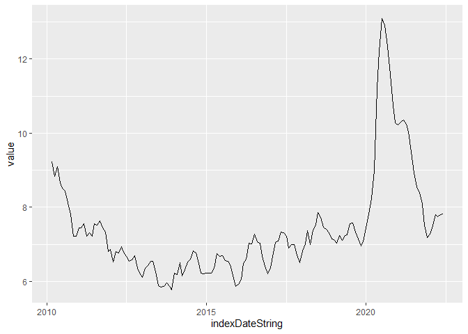

Paquete para el consumo de información del API de Banco Central de Chile. Contiene funciones para el tratamiento y resumen de datos junto a otra funciones para gráficar o transformar la información a objetos ts.
Más información del API en https://si3.bcentral.cl/estadisticas/Principal1/web_services/index.htm.
Installation
You can install the development version of bcchr from GitHub with:
# install.packages("devtools")
devtools::install_github("jbkunst/bcchr")Example
Luego de cargar el paquete se debe setear los parámetros de acceso utilizando options.
Luego la funciones acceden a estos valores para hacer los request a la API.
bcch_GetSeries() now reads Banco Central JSON responses as raw bytes and converts them from ISO-8859-1 to UTF-8 before parsing. This avoids encoding-related JSON parsing failures in Linux and GitHub Actions environments.
bcchr::bcch_GetSeries(
"F032.PIB.FLU.R.CLP.EP18.Z.Z.0.T",
firstdate = as.Date("2000-01-01"),
lastdate = Sys.Date()
)
desempleo <- bcch_GetSeries("F049.DES.TAS.INE9.10.M")
desempleo
#> # A tibble: 148 × 3
#> indexDateString value statusCode
#> <date> <dbl> <chr>
#> 1 2010-03-01 9.23 OK
#> 2 2010-04-01 8.84 OK
#> 3 2010-05-01 9.09 OK
#> 4 2010-06-01 8.66 OK
#> 5 2010-07-01 8.51 OK
#> 6 2010-08-01 8.44 OK
#> 7 2010-09-01 8.12 OK
#> 8 2010-10-01 7.81 OK
#> 9 2010-11-01 7.23 OK
#> 10 2010-12-01 7.21 OK
#> # … with 138 more rows
autoplot(desempleo)